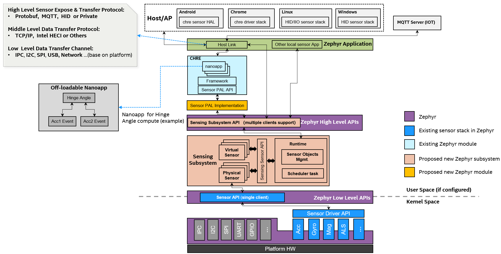
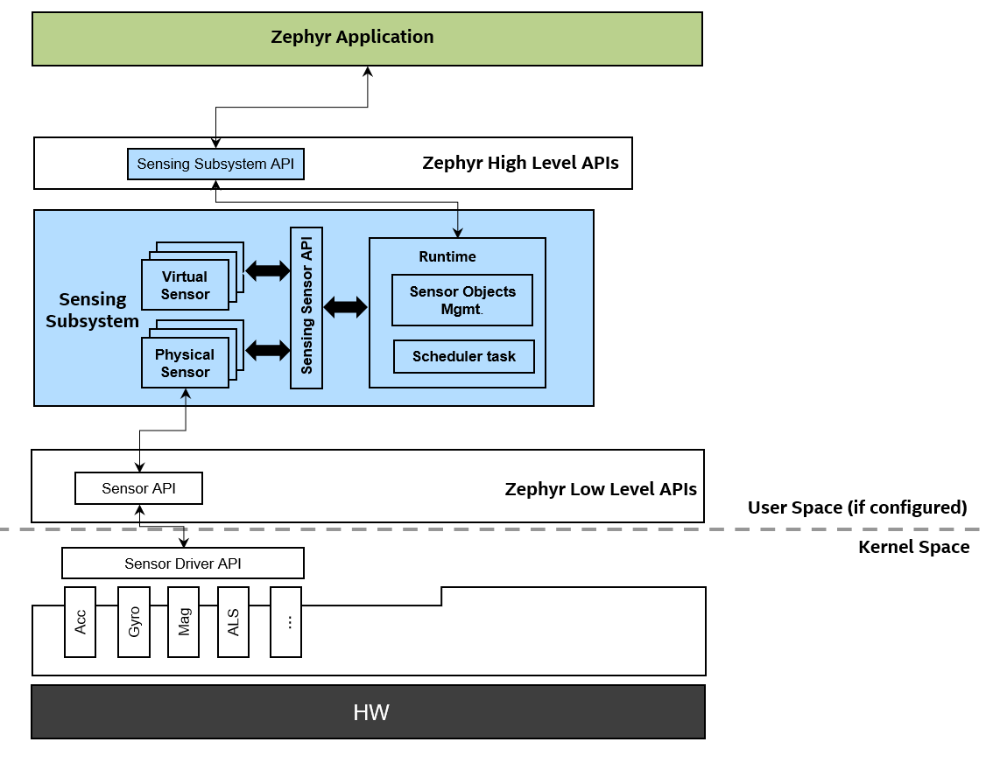
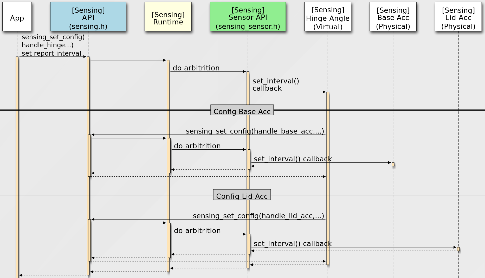
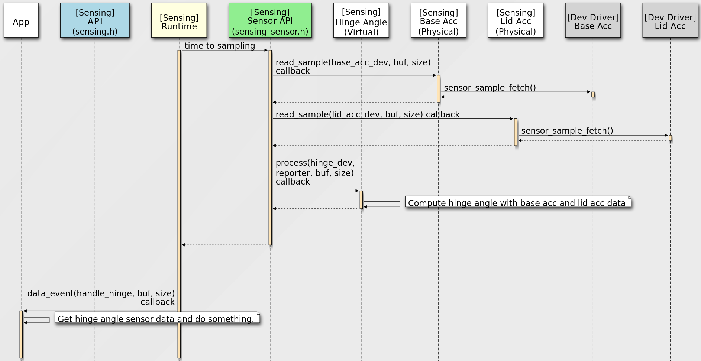
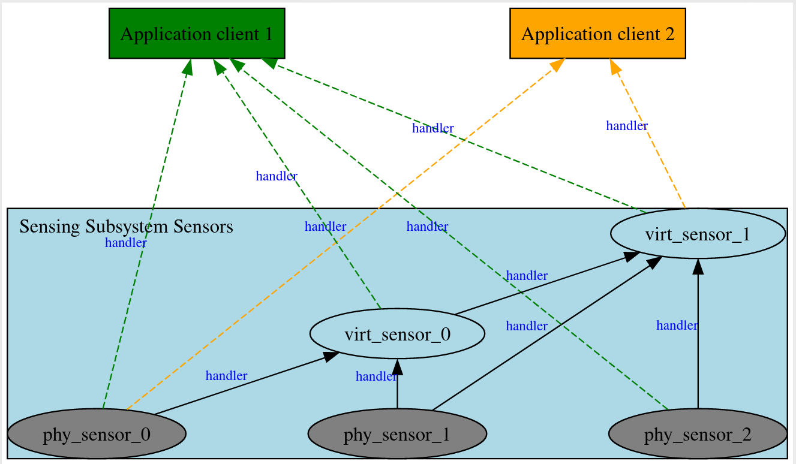

Sensing Subsystem
Overview
Sensing Subsystem is a high level sensor framework inside the OS user space service layer. It is a framework focused on sensor fusion, client arbitration, sampling, timing, scheduling and sensor based power management.
Key concepts in Sensing Subsystem include physical sensor and virtual sensor objects, and a scheduling framework over sensor object relationships. Physical sensors do not depend on any other sensor objects for input, and will directly interact with existing zephyr sensor device drivers. Virtual sensors rely on other sensor objects (physical or virtual) as report inputs.
The sensing subsystem relies on Zephyr sensor device APIs (existing version or update in future) to leverage Zephyr’s large library of sensor device drivers (100+).
Use of the sensing subsystem is optional. Applications that only need to access simple sensors devices can use the Zephyr Sensors API directly.
Since the sensing subsystem is separated from device driver layer or kernel space and could support various customizations and sensor algorithms in user space with virtual sensor concepts. The existing sensor device driver can focus on low layer device side works, can keep simple as much as possible, just provide device HW abstraction and operations etc. This is very good for system stability.
The sensing subsystem is decoupled with any sensor expose/transfer protocols, the target is to support various up-layer frameworks and Applications with different sensor expose/transfer protocols, such as CHRE, HID sensors Applications, MQTT sensor Applications according different products requirements. Or even support multiple Applications with different up-layer sensor protocols at the same time with it’s multiple clients support design.
Sensing subsystem can help build a unified Zephyr sensing architecture for cross host OSes support and as well as IoT sensor solutions.
The diagram below illustrates how the Sensing Subsystem integrates with up-layer frameworks.

Configurability
Reusable and configurable standalone subsystem.
Based on Zephyr existing low-level Sensor API (reuse 100+ existing sensor device drivers)
Provide Zephyr high-level Sensing Subsystem API for Applications.
Separate option CHRE Sensor PAL Implementation module to support CHRE.
Decoupled with any host link protocols, it’s Zephyr Application’s role to handle different protocols (MQTT, HID or Private, all configurable)
Main Features
- Scope
Focus on framework for sensor fusion, multiple clients, arbitration, data sampling, timing management and scheduling.
- Sensor Abstraction
Physical sensor: interacts with Zephyr sensor device drivers, focus on data collecting.
Virtual sensor: relies on other sensor(s), physical or virtual, focus on data fusion.
- Data Driven Model
Polling mode: periodical sampling rate
Interrupt mode: data ready, threshold interrupt etc.
- Scheduling
Single thread main loop for all sensor objects sampling and process.
- Buffer Mode for Batching
- Configurable Via Devicetree
Below diagram shows the API position and scope:

Sensing Subsystem API is for Applications.
Sensing Sensor API is for development sensors.
Major Flows
Sensor Configuration Flow

Sensor Data Flow

Sensor Types And Instance
The Sensing Subsystem supports multiple instances of the same sensor type,
there’re two methods for Applications to identify and open an unique sensor instance:
Enumerate all sensor instances
sensing_get_sensors()returns all current board configuration supported sensor instances’ information in asensing_sensor_infopointer array .Then Applications can use
sensing_open_sensor()to open specific sensor instance for future accessing, configuration and receive sensor data etc.This method is suitable for supporting some up-layer frameworks like
CHRE,HIDwhich need to dynamically enumerate the underlying platform’s sensor instances.Open the sensor instance by devicetree node directly
Applications can use
sensing_open_sensor_by_dt()to open a sensor instance directly with sensor devicetree node identifier.For example:
sensing_open_sensor_by_dt(DEVICE_DT_GET(DT_NODELABEL(base_accel)), cb_list, handle);
sensing_open_sensor_by_dt(DEVICE_DT_GET(DT_CHOSEN(zephyr_sensing_base_accel)), cb_list, handle);
This method is useful and easy use for some simple Application which just want to access specific sensor(s).
Sensor type follows the
HID standard sensor types definition.
Sensor Instance Handler
Clients using a sensing_sensor_handle_t type handler to handle a opened sensor
instance, and all subsequent operations on this sensor instance need use this handler,
such as set configurations, read sensor sample data, etc.
For a sensor instance, could have two kinds of clients:
Application clients and Sensor clients.
Application clients can use sensing_open_sensor() to open a sensor instance
and get it’s handler.
For Sensor clients, there is no open API for opening a reporter, because the client-report
relationship is built at the sensor’s registration stage with devicetree.
The Sensing Subsystem will auto open and create handlers for client sensor
to it’s reporter sensors.
Sensor clients can get it’s reporters’ handlers via sensing_sensor_get_reporters().

Note
Sensors inside the Sensing Subsystem, the reporting relationship between them are all auto
generated by Sensing Subsystem according devicetree definitions, handlers between client sensor
and reporter sensors are auto created.
Application(s) need to call sensing_open_sensor() to explicitly open the sensor instance.
Sensor Sample Value
Data Structure
Each sensor sample value defines as a common
header+readings[]data structure, likesensing_sensor_value_3d_q31,sensing_sensor_value_q31, andsensing_sensor_value_uint32.The
headerdefinitionsensing_sensor_value_header().Time Stamp
Time stamp unit in sensing subsystem is
micro seconds.The
headerdefines a base_timestamp, and each element in the readings[] array defines timestamp_delta.The timestamp_delta is in relation to the previous readings (or the base_timestamp)
For example:
timestamp of
readings[0]isheader.base_timestamp+readings[0].timestamp_delta.timestamp of
readings[1]istimestamp of readings[0]+readings[1].timestamp_delta.
Since timestamp unit is micro seconds, the max timestamp_delta (
uint32_t) is4295seconds.If a sensor has batched data where two consecutive readings differ by more than
4295seconds, the sensing subsystem runtime will split them across multiple instances of the readings structure, and send multiple events.This concept is referred from CHRE Sensor API.
Data Format
Sensing Subsystemuses per sensor type defined data format structure, and supportQ Formatdefined in include/zephyr/dsp/types.h forzdsplib support.For example
sensing_sensor_value_3d_q31can be used by 3D IMU sensors likeSENSING_SENSOR_TYPE_MOTION_ACCELEROMETER_3D,SENSING_SENSOR_TYPE_MOTION_UNCALIB_ACCELEROMETER_3D, andSENSING_SENSOR_TYPE_MOTION_GYROMETER_3D.sensing_sensor_value_uint32can be used bySENSING_SENSOR_TYPE_LIGHT_AMBIENTLIGHTsensor,and
sensing_sensor_value_q31can be used bySENSING_SENSOR_TYPE_MOTION_HINGE_ANGLEsensor
Device Tree Configuration
Sensing subsystem using device tree to configuration all sensor instances and their properties, reporting relationships.
See the example samples/subsys/sensing/simple/boards/native_sim.overlay